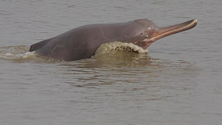

| 恆河豚 |
|
 |

生物介紹：
恆河豚（學名：Platanista gangetica）又稱南亞河豚、盲河豚、側遊江豚等是一種產自南亞的淡水鯨，恆河豚屬（Platanista）的唯一物種，也是恆河豚科的唯一現生種。恆河豚體呈棕灰色，背鰭小而呈三角形，鰭肢和尾鰭較大。具有狹長的嘴喙，即使在嘴未張開的情況下，也可看到明顯的牙齒生長在上下顎。年幼的恆河豚牙齒約有一英吋長，而且是窄且彎曲的。但隨著年齡增長，牙齒變得平坦且方正。恆河豚通常獨居或組成鬆散的小群活動，牠們並不會組成嚴密且有明顯互動的群體。它們的日常活動依賴回聲定位功能，以小型魚類為主食。因眼內缺少晶狀體，所以幾乎等同於失明，僅能感受到光的強度和方向。
分布：
恆河豚分為兩個亞種：指名亞種（恆布河豚 P. g. gangetica）主要生活在恆河及布拉馬普特拉河水系，分布範圍涵蓋印度、孟加拉國和尼泊爾，據信現存3500頭以上；印度河亞種（印度河豚 P. g. minor）僅分布於巴基斯坦的印度河，估計現存約1200–1800頭。
原因：
人類對河流系統的開發利用，給恆河豚的兩個亞種都造成了非常不利的影響。魚網會導致牠們被纏住，造成局部地區的種群數量減少。每年仍有一些恆河豚被獵捕，牠們的油與肉被當作塗敷的藥劑與捕捉鯰魚的餌。引河水灌溉農田降低了恆河豚棲息範圍內的河流水位，工業與農業用的化學藥品排放到水中也可能會使其數量下降。最重要的問題可能是在許多河流中總共建造了超過50座水壩，導致恆河豚族群被分離與基因庫的減少。目前印度河亞種有三個族群，如保育得當被認為可以長期倖存下去。